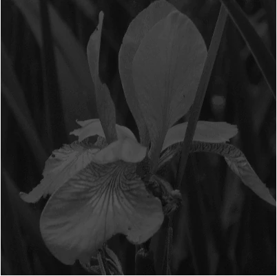
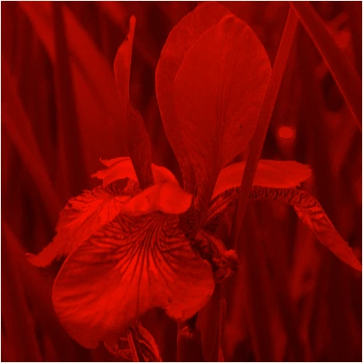
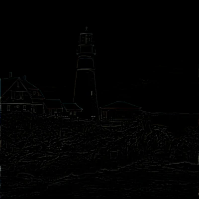
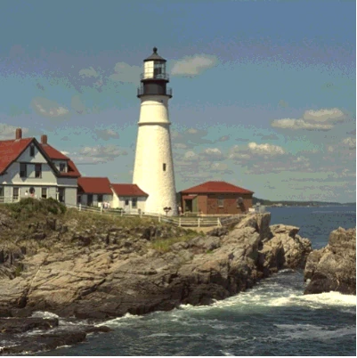

Scrawl-canvas filters
The purpose of a computer graphics filter is to take an input graphic, apply a set of manipulations to each pixel in the graphic, and output the modified result. For web pages, filter algorithms are generally applied to elements - including <canvas> elements - using the CSS filter property.
tl;dr: Filter effects - however they are used in a web page - are often computationally expensive and risk slowing down page speed and responsiveness. Use filters wisely!
CSS and SVG filters
CSS filters are a set of functions which the dev-user can use to quickly apply a range of effects - blur(), saturate(), drop-shadow(), etc - either to a DOM element or to the background behind that element. While these filters can be stacked (eg: sepia + blur), for more advanced effects CSS offers a url() filter, which allows the dev-user to apply an SVG-defined filter effect to the element.
Note that SVG filters are complex and powerful. In addition to the MDN page linked above, the following resources may be of interest to the inquisitive:
- (Webplatform, 2015) - A summary of the various SVG filter primatives
- (Codrops, 2019) - A series of articles around SVG filters
- (yoksel.github.io) - An interactive SVG filters playground
Browsers extend the use of these filters to Javascript-driven paint operations in the <canvas> element. The canvas context engine includes a filter property (note: the key is singular), which dev-users can use to apply CSS filters to specific fill and stroke invocations. SC implements this functionality via regular set function calls: cell.set({filter: string}) for the entire Cell object's display, and entity.set({filter: string}) for individual entity objects within the display. Test demo Filters-501 shows this functionality in action.
The SC filter factory
While browsers have (for the most part) supported general CSS filter functionality since 2013, extending that support to the canvas context engine engine.filter property has lagged and (as of March 2025, with respect to Safari browsers) remains incomplete.
Given how useful filter functionality can be for creating various <canvas>-based displays and products, repo-devs built a bespoke filter engine into SC. Much of the functionality for the filter engine is defined in the helper/filter-engine.js file. This filter engine - which is an entirely novel filter system, separate from CSS filters - acts as a singleton object, created during SC initialization, and handles all SC-specific filter effect processing across all <canvas> elements present on the web page.
tl;dr: The SC filter engine has been inspired by (the better parts of) the Filter Effects Module Level 1 specification (which itself is based on the SVG 1.1 (Second Edition) Filter Effects specification). It is NOT an emulation of that specification.
The scrawl.makeFilter() factory function
SC filters have been built to operate seamlessly with the wider SC environment. Dev-users can create a Filter object using the scrawl.makeFilter() factory function. Once created, the filter can be applied multiple times to Cell, Group and entity objects by adding it to their filters (note: the key is plural!) Array:
- Filter objects can be applied to entity, Group and Cell objects during their instantiation using the
filters: ['name-string', Filter-object, ...]attribute. This attribute expects to receive an Array of Filter objects and/or those objects'namestrings. - Following instantiation, any entity, Group or Cell object can have its
filtersArray updated using theobject.addFilters('name-string', Filter-object, ...),object.removeFilters('name-string', Filter-object, ...)andobject.clearFilters()functions.
The code associated with assigning and managing Filter objects on Cell, Group and entity objects can be found in the mixin/filter.js file. The factory function code itself is defined in the factory/filter.js file.
Create Filter objects
Dev users can instantiate a Filter object at any time using the scrawl.makeFilter({key: value, ...}) factory function. The factory takes a single object for its argument, all of whose attributes are optional:
Attribute Type Default Comments
---------- --------------- -------------------- ---------------------------------------------------
name String computer-generated Must be unique
actions ActionObject[] [] Action objects define filter actions
method String '' Convenience alternative to generate ActionObjects
lineIn String '' ID string of chained filter input
lineMix String '' ID string of chained filter input
lineOut String '' ID string for this filter's output
opacity Number 1 Float number between 0 and 1
... (Additional ActionObject-specific attributes)The Filter objects generated by the scrawl.makeFilter() factory function are tracked objects, thus each object requires its own unique name attribute when being instantiated. Once created, they can be retrieved from the SC library using the scrawl.findFilter('name-string') function.
There are actually two ways to use the factory function, both of which are equally valid:
- For the modern approach, dev-users can define an Array of action objects keyed to the
actionsattribute. These action objects outline a set of filter primative functions, alongside the values to be fed into those functions, which together create the desired filter effect. - The legacy approach uses the
methodattribute, alongside the required attributes for the method. SC will automatically create the appropriate action objects for the stipulated method as part of the Filter object's instantiation.
While the modern approach offers more versatility when it comes to chaining filter primitive functions together to create complex effects, the legacy approach is often more convenient for creating simpler effects. It is also easier to animate legacy filter attributes. Compare the different approaches to creating a simple pixellation filter:
Legacy approach Modern approach
-------------------------------------- -----------------------------------
const pixels = scrawl.makeFilter({ const pixels = scrawl.makeFilter({
name: 'my-pixellated-filter', name: 'my-pixellated-filter',
method: 'pixelate', actions: [{
tileWidth: 20, action: 'pixelate',
tileHeight: 20, offsetX: 8,
offsetX: 8, offsetY: 8,
offsetY: 8, tileHeight: 20,
}); tileWidth: 20,
}],
});More complex filters - such as this comic-effect filter, as seen in test demo Filters-103 - are easier to build and edit using the modern approach:
const comicFilter = scrawl.makeFilter({
name: 'my-comic-effect-filter',
actions: [{
action: 'gaussian-blur',
radius: 1,
lineOut: 'outline1',
}, {
action: 'matrix',
lineIn: 'outline1',
lineOut: 'outline2',
width: 3,
height: 3,
offsetX: 1,
offsetY: 1,
weights: [0,1,0,1,-4,1,0,1,0],
}, {
action: 'threshold',
lineIn: 'outline2',
lineOut: 'outline3',
level: 6,
high: [0, 0, 0, 255],
low: [0, 0, 0, 0],
includeAlpha: true,
}, {
action: 'gaussian-blur',
radius: 1,
lineIn: 'outline3',
lineOut: 'outline4',
}, {
action: 'step-channels',
clamp: 'round',
lineOut: 'color1',
red: 16,
green: 16,
blue: 16,
}, {
action: 'gaussian-blur',
radius: 4,
lineIn: 'color1',
lineOut: 'color2',
}, {
action: 'compose',
compose: 'destination-over',
lineIn: 'color2',
lineMix: 'outline4',
}],
});Serialize, clone and kill Filter objects
Filter objects can be serialized using the filter.saveAsPacket() function. To deserialize a Filter packet string use either object.importPacket('url-string' | ['url-string', ...]) or object.actionPacket('packet-string') functions where object is any existing SC tracked object.
To clone a Filter object, use the filter.clone({key: value, ...}) function. Data included in the function's argument object will overwrite the existing Filter object's values.
The filter.kill() function will remove the Filter object entirely from the SC environment. This includes removing the filter from any Cell, Group or entity object that may be using it.
Filter application
Filter objects are not part of the SC scene graph. Instead they are applied directly to the SC objects they have been associated with (via those objects' filters attribute array), as follows:
- For Cell objects, their associated Filter objects are applied at the point where the Cell stamps itself onto its host Cell, at the end of the
compileoperation of the Display cycle. - Group objects set up their filtered output by instructing their associated entity Objects to stamp themselves onto a
poolCell that the Group instantiates and supplies; the filters are then applied to the pool Cell before it is stamped into the Group object's host Cell (near the end of thecompileoperation of the Display cycle). - Entity objects also make use of
poolCells to generate their filtered output, which then gets stamped onto whichever Cell object their Group object has supplied to them (that is: the host Cell for unfiltered Groups, or anotherpoolCell for filtered Groups).
Note that both CSS/SVG filters, and SC Filter objects, can (in theory) be applied to a Cell or entity object at the same time. The advice to dev-users considering such an approach is: don't! Filters are expensive operations; invoking two entirely separate filter systems on the same object will increase the risk of page performance degredation.
Stacking filters
CSS filters can be combined:
<div class="filtered-div">
<p>This is a div element with a CSS filter effect applied to it</p>
</div>
<style>
.filtered-div {
filter: hue-rotate(90deg) drop-shadow(6px 6px 2px black);
}
</style>In the above example, the browser will first apply the hue-rotate filter to the <div> element, then pass the result of that pixel manipulation to the drop-shadow filter for further processing before delivering the final output to the browser's display.
The simplest way to think of this is as a form of layer stacking: the original input goes at the bottom of the stack then each filter is added, in turn, over the original input until all the filters have been applied. In effect, the output from the previous filter becomes the input for the next filter. The end-user only sees the top of the stack; that is, the final result of the entire operation.
The SC filter engine follows much the same process (unless directed otherwise). When an entity with an Array of Filter objects gets stamped on its host Cell, the filter engine will take all of those filters and apply their primative functions, in turn, to the entity display. Only after the last primative function completes does the filter engine return the results to the SC system for stamping onto the host Cell.
This means that the order in which Filter objects appear in the entity.filters Array becomes very important:
scrawl.makeFilter({
name: 'my-gray-filter',
method: 'gray',
}).clone({
name: 'my-red-filter',
method: 'red',
});
// This first image will have all of its blue/green channel colors set to 0
// before the cross-channel-averaging gray effect is applied
// - it will display as (a dark) monochrome white
scrawl.makePicture({
name: 'gray-image',
asset: 'iris',
dimensions: ['100%', '100%'],
copyDimensions: ['100%', '100%'],
filters: ['my-red-filter', 'my-gray-filter'],
// This cloned image has the filters defined in reverse order
// - it will display as monochrome red
}).clone({
name: 'red-image',
filters: ['my-gray-filter', 'my-red-filter'],
});| input > red > gray > output | input > gray > red > output |
|---|---|
 |
 |
Chaining filters
SVG filters include a way to define the inputs for an SVG filter primitive, and label the primitive's output so that it can be used as an input for a subsequent primitive operation. This method of filter chaining is what gives SVG filters their unique power to break away from the linear stacking approach to filter composition.
SC follows in SVG's footsteps. Every SC filter primative function includes lineIn and lineOut argument attributes to define the primitive's input data and output label; some functions also require a lineMix attribute
Input and output identifiers
When an SC object invokes the filter engine to create a filtered output, it will include an imageData object of its unfiltered display for the filter engine to work on. The imageData dimensions will match the dimensions of the host Cell on which the filtered output will eventually be stamped.
When the SC filter engine receives this imageData, it's first action will be to unwrap the data in preparation for work. Three copies of the imageData object will be cached:
source- this copy is never altered by the filters.sourceAlpha- this copy is mutated: all pixel color channels get set to0, while the pixel's alpha channel is set to0for transparent pixels,255otherwise.work- this is the working copy of the imageData object.
The filter engine then iterates through each filter action object. When the object's action function is invoked, it will check the object's lineIn (and lineMix, if required) attribute and select its input data as follows:
lineIn: 'source'- use thecache.sourceimageData.lineIn: 'source-alpha'- use thecache.sourceAlphaimageData.lineIn: undefined- use thecache.workimageData.
The lineIn and lineMix attributes can also be String identifiers:
- Whenever an action function completes, it will replace the
cache.workimageData object with its own modified imageData output - except where the action object'slineOutidentifier String has been defined, in which case the output will be stored in a newcache[identifier]attribute. - Once a new
cache[identifier]attribute has been created, any subsequent action function can use that identifier String for theirlineIn(andlineMix) attribute value. The function will use that identifier's imageData object for its input.
The following example shows the steps involved in creating the filtered output for the comic filter effect, whose code was shown earlier on this page:
| Filter | Input | Output |
|---|---|---|
Path 1 step 1 action: 'gaussian-blur' lineIn: undefined radius: 1 lineOut: 'outline1' |
||
Path 1 step 2 action: 'matrix' lineIn: 'outline1' width: 3' height: 3' offsetX: 1' offsetY: 1 weights: [0,1,0,1,-4,1,0,1,0] lineOut: 'outline2' |
 |
|
Path 1 step 3 action: 'threshold' lineIn: 'outline2' level: 6 high: [0,0,0,255] low: [0,0,0,0] includeAlpha: true lineOut: 'outline3' |
||
Path 1 step 4 action: 'gaussian-blur' lineIn: 'outline3' radius: 1 lineOut: 'outline4' |
||
Path 2 step 1 action: 'step-channels' lineIn: undefined red: 16 green: 16 blue: 16 clamp: 'round' lineOut: 'color1' |
 |
|
Path 2 step 2 action: 'gaussian-blur' lineIn: 'color1' radius: 4 lineOut: 'color2' |
| Filter | Input 1 | Input 2 | Output |
|---|---|---|---|
Composition step action: 'compose' lineIn: 'color2' lineMix: 'outline4' compose: 'destination-over' lineOut: undefined |
Filter opacity
All SC filter primitive functions include a final step - a crude channel-by-channel blending of the function's input imageData data and its calculated output data. The strength of this blend is set in the filter's opacity attribute:
- For
opacity: 0, the final output is 100% input + 0% calculated effect - For
opacity: 1, the final output is 0% input + 100% calculated effect - For
opacity: 0.4, the final output is 60% input + 40% calculated effect - … etc.
Most of the Filter test demos include an opacity control for repo-dev testing and dev-user investigation.
Using objects as filter stencils
CSS/SVG filters can be used to add a filter effect to the background behind a DOM element, via the CSS backdrop-filter property.
In a similar vein, SC filters can be applied to the (currently stamped) display behind an SC entity object, or a Group of such objects. Dev-users can set up this effect by setting the object's isStencil attribute to true.
Note that the object will not be able to memoize its filtered output - there's no way that SC can predict whether the background behind an entity has changed between Display cycle frames.
Test demo Filters-028 demonstrates stencilled filter effects.
Memoizing a filtered object's output
For any SC-controlled <canvas> which includes any animated effects in its display, that canvas needs to update at a minimum of 20 frames-per-second (fps) - every 50 milliseconds - to make the animation tolerable for the end-user, and preferably should update at a rate of 60fps (16ms) for a smooth animation effect. Some device/screen combinations allow for an update rate of 120fps (8ms) or higher!
This means that SC must complete all of a Display cycle's required updates - across all <canvas> elements currently animating on the web page - within 16ms. For scenes which include filtered Cell, Group or entity objects this can be a difficult ask, given the intense computational nature of filter calculations.
Thus it makes sense for filtered objects to cache - memoize - their filtered output as comprehensively as possible. Dev-users can achieve this by setting the memoizeFilterOutput attribute to true on these objects.
SC attempts to make the memoization process as painless as possible for dev-users. Much of the functionality has been internalized so setting the memoizeFilterOutput flag should be the only action the dev-user has to take.
Internal memoization functionality
When a filtered object first has its memoizeFilterOutput flag set to true it will generate a random String and associate it to its internal filterIdentifier attribute. The first time the filter engine processes the object's filters and generates an output it will lodge that output in the SC workstore, keyed to the identifier string, before returning the output for stamping.
The next time the filter engine encounters the object, it will check the workstore for the identifier key. If the key exists, the engine immediately returns that previously generated output.
There are a number of actions that can invalidate the memoized filter output. These include:
- Any change to the filtered object's position, dimensions, scale, rotation or other styling.
- Any change to the Array of filters that need to be applied to the object, or (for legacy filters) changes to an associated Filter object's attributes.
- Objects acting as a filter stencil cannot be memoized as there's no way to predict that the canvas display behind the object has not changed
- Filtered Cell object output cannot be memoized (for the same reason).
Whenever the dev-user triggers such changes, the object will set a dirtyFilterIdentifier flag which in turn will cause the object to set its filterIdentifier attribute to a new random String. The next time the filter engine encounters the object it will not find the new identifier in the SC workstore, leading to it running all the required filter operations on the object and lodging that output in the workstore keyed to the new identifier.
The workstore regularly purges unaccessed keys - the output keyed to the old identifier will generally be purged one second after it was last accessed.
One-time capture of a filtered object's output
SC includes three functions to capture either a Cell, Group or entity object's output in a DOM <img> element which can then be imported into the SC environment as an ImageAsset object. These functions (defined in the asset-management/image-asset.js file) are:
scrawl.createImageFromCell(object, assetName)scrawl.createImageFromGroup(object, assetName)scrawl.createImageFromEntity(object, assetName)
Where:
- The
objectargument is either the Cell, Group or entity object, or that object'snameattribute value. - The
assetNameargument is the Stringnamevalue which will be given to the new Asset object.
These functions are one-shot functions: the capture will happen as part of the next Display cycle. The functionality includes adding the visual output to an <img> element in the DOM, as a child of an appropriately hidden <div> element within the <canvas> element. The action is necessarily asynchronous, thus the new Asset object may take a few additional iterations of the Display cycle to show up.
There are various reasons why a dev-user may want to capture a static image of a Cell, Group or entity object - for instance when a particularly complicated filter has been applied to that object's display but it is not possible to memoize the object's output.
Once the new asset is captured it can be displayed multiple times in canvas scenes using Picture entitys. For example, see test demos Canvas-046, and Canvas-020.
The code associated with this functionality is closely tied with the filter functionality code (described below) as both functionalities rely on using pool Cell objects for generating their output.
Internal coding protocols
The work to set up a Cell, Group or entity object to be modified by SC filters, and to display the filtered results on a host Cell, happens outside of the SC filter engine and factory code.
Due to Cell, Group and entity objects having distinct roles in the Display cycle, the protocols for applying filters to them necessarily differ - as described below. All of this functionality happens internally; the dev-user only needs to add filters to the objects for the processes to take place.
Apply filters to Cell objects
SC Cell object filters are applied at the end of the Cell's participation in the Display cycle compile operation, after all entitys have stamped themselves onto its display. This filtered result will directly replace the original image data, ready for final display as part of the Display cycle show operation.
Any required output stashing functionality (as requested by scrawl.createImageFromCell()) happens after the filtering functionality completes.
This functionality is all defined in the factory/cell.js file, specifically the cell.compile(), cell.applyFilters() and cell.stashOutputAction() functions.
Apply filters to Group objects
At the start of every Display cycle compile operation, each Cell object goes through its Array of associated Group objects and invokes the group.stamp() function on each of them in turn. This leads to the Group object performing the following protocol:
- Determine whether any filters have been associated with the Group object, or if output needs to be stashed (as requested by
scrawl.createImageFromGroup()function):- If yes, retrieve a
poolCell object and set its dimensions to the Group's host Cell object's dimensions. - If no, use the Group's host Cell object for the following steps.
- If yes, retrieve a
- Prepare the Group object's associated entity objects for stamping by invoking
group.prepareStamp(). - Invoke the
group.stampAction()function, passing it thepoolCell object if one has been created. - All associated entity objects now stamp themselves onto the required Cell object (as determined in step 1).
- If a
poolCell was supplied as the function's argument and Filter objects have been associated with the group, invoke thegroup.applyFilters()function:- If the group is acting as a stencil, do the work to retrieve the host Cell's current display and stamp it onto the
poolCell, clipped by the Group's entity object's stamped displays. - Preprocess the filters to load any external assets into the filter engine.
- Invoke the filter engine, passing it the necessary input and filter data.
- Stamp the filter engine's results onto the host Cell.
- If the group is acting as a stencil, do the work to retrieve the host Cell's current display and stamp it onto the
- If output stashing is required then invoke the
group.stashAction()function. - If a
poolCell object was used, release it back to the pool.
This functionality is all defined in the factory/group.js file.
Apply filters to entity objects
SC filters are applied to the display output of entity objects at the point where they are stamped onto their host Cell. This is achieved using the following protocol:
- Determine whether any filters need to be applied to the entity:
- If no, use the entity's
regularStampfunctionality (not detailed below). - If yes, use the entity's
filteredStampfunctionality.
- If no, use the entity's
- If the entity has not been stamped before, or its
entity.dirtyFiltersflag istrue, process the filter objects into the internalentity.currentFiltersArray so they are ready for application. - Request a
poolCell object, size it to match the host Cell's dimensions andregularStampthe entity onto it (ignoring theentity.globalCompositeOperationattribute).- If the
entity.isStencilBoolean flag has been set totrue, stamp the host Cell's current display over the entity (usingglobalCompositeOperation: 'source-in').
- If the
- Get the current image data from the
poolCell. - Preprocess the filter objects - specifically to retrieve data for any external images used by the filters.
- Invoke the filter engine's
filterEngine.action()function, passing all the required data to it. - Reset the
poolCell and stamp the filter engine's returnedimageDatadata into it. - If the
entity.stashOutputBoolean flag has been set totrue, stash thepooldata, either in a DOM<img>element or asimageDataassigned to theentity.stashedImageDataattribute. - Stamp the
poolCell onto the host Cell (taking into account theentity.globalCompositeOperationattribute). - Release the
poolCell object.
All entity objects, apart from the EnhancedLabel entity, share the above functionality, whose code can be found in the mixin/entity.js file - specifically the filteredStamp() and getCellCoverage() functions.
Apply filters to EnhancedLabel entity objects
Because the EnhancedLabel entity is so tightly coupled with the SC text layout engine, repo-devs have had to replicate the entity filter protocol in that entity's factory function. Thus changes in the entity filter protocol will need to be replicated in the factory/enhanced-label.js file.
The SC filter engine
The filter engine has been designed as a single, standalone JS object that handles all SC filter requirements across all SC-controlled <canvas> elements on a web page. The object instantiates when the SC library first runs, which generally happens when it is first imported into the page during page load.
All engine functionality can be found in the helper/filter-engine.js file. The file exports the instantiated object itself to other files in the SC environment. Files that import the object should only use the engine.action(packetObject) function which takes a packet of data as its argument and returns an ImageData object ready to be painted onto a CanvasRenderingContext2D engine.
Code efficiency
The SC filter engine has been built around the principle of manipulating ImageData object pixel data, which presents as a Uint8ClampedArray whose elements are restricted to being positive integer Numbers in the range 0-255.
Each pixel in the image data is coded in the sRGB color space using three color channels and an additional alpha channel, always in the order [red, green, blue, alpha]. This means that for an ImageData object with a width of 100px and a height of 50px, the imageData.data Array will be 100 * 50 * 4 = 20,000 elements long.
Given the (potentially huge) sizes that these image data Arrays can reach, repo-devs need to be particularly strict when it comes to coding up the data manipulations for filter primitive functions. The following guidelines may help:
- Precalculate any requirements that a primitive function may have - for instance, the locations of pixels in a matrix calculation, or the pixels that make up a tile - and cache the results in case other primitive functions can make use of them.
- Always try to process the data array in a single pass. For instance, rather than use two loops to process image data by rows and columns, repo devs should use a single loop and calculate row/column positions within that loop.
- Always check to see if the current pixel is transparent (its alpha channel has a value of
0) and, if yes, skip the calculations for that pixel if possible. - When dealing with non-RGB color space calculations, use the color caches - calculating a pixel's OKLCH channel values is very computationally expensive which is why the results of the first calculation for a given color should be cached.
Filter regions
A key difference between SVG filters and SC filters is that the SVG restricts its filter computations to a filter effects region. It takes this approach to limit the pixel area that needs to be processed by its filter functions.
SC does not take this approach. Instead the ImageData object that the filter engine receives will have the dimensions of the host Cell where the filter results will be applied. When a dev-user applies a filter to a 10px x 10px Block entity, and a Wheel entity with radius 10px, both appearing on a 100px x 100px Cell, the ImageData objects presented to the filter engine will include a data Array containing (100 x 100 x 4 = 40,000) elements.
Consider the situation where both the Block and Wheel entitys have the same pixellate filter applied to them. The pixellate primitive function, as part of its work, will generate a set of objects containing the location details (the data Array indexes) for the pixels contained in each of the tiles required to generate the effect. It calculates this locations data across the entire ImageData, and stashes the results in the SC workstore. Thus while the calculation may happen for the first entity the primitive function encounters, for every other entity on that Cell using the same filter the primitive function only needs to retrieve those calculated results from the workstore - and this remains true even if the Block or Wheel entitys subsequently change their dimensions, scale or position.
tl;dr: SVG filter regions are (often) tied to the elements to which the filter is applied. SC filter regions are tied to the Cell on which their effects appear.
While it may seem sensible to limit the area over which a filter effect gets applied, to minimize the calculation effort, the current SC approach - paradoxically - doesn't seem to significantly damage filter performance. This can be seen in test demo Canvas-007.
External caching using the SC workstore
The SC workstore is a keyed object used for longer-term caching of generated data. Like the SC library and the filter engine itself, only one workstore object exists in the SC environment, instantiated at the same time as those other objects during page initialization.
The workstore itself (alongside an accompanying workstoreLastAccessed object which helps keep track of stale workstore items) is not exported. Instead the helper/workstore.js file exports getter and setter functions that other SC files can import:
checkForWorkstoreItem('key')getWorkstoreItem('key')setWorkstoreItem('key', data)getOrAddWorkstoreItem('key', data)setAndReturnWorkstoreItem('key', data)
The filter engine makes extensive use of the workstore. Many of the calculations undertaken by the engine are expensive, thus it makes sense to cache the results after their first calculation to speed up future operations:
buildHorizontalBlur creates a grid - an Array of Arrays - detailing which pixels contribute to the horizontal part of each pixel's blur calculation. Stores the result in the key
blur-h-${gridWidth}-${gridHeight}-${radius}. Used by theblurprimitive function.buildImageGrid creates a grid - an Array of Arrays representing columns and rows - which contains the location of each pixel in an
ImageData.dataArray. Stores the result in the keygrid-${ImageData.width}-${ImageData.height}. Used by theblur,offsetandswirlprimitive functions.buildMatrixGrid creates a grid - an Array of Arrays - detailing which pixels contribute to each pixel's matrix calculation. Stores the result in the key
matrix-${ImageData.width}-${ImageData.height}-${width}-${height}-${x}-${y}. Used by thecorrode,embossandmatrixprimitive functions.buildVerticalBlur creates a grid - an Array of Arrays - detailing which pixels contribute to the vertical part of each pixel's blur calculation. Stores the result in the key
blur-v-${gridWidth}-${gridHeight}-${radius}. Used by theblurprimitive function.getGradientData creates an imageData object containing the pixel values from a
256px x 1pxcanvas to which a linear gradient has been applied. Stores the result in the keygradient-data-${gradient.name}. Used by themap-to-gradientprimitive function as well as SC gradient Palette objects.getRandomNumbers generates an array of "random" numbers from either bluenoise or ordered data, or alternatively from a seeded random number generator, to a given length. Stores the results in the key
random-${seed}-${length}-${type}. Used by theglitch,random-noise,reduce-paletteand (indirectly)tilesprimitive functions.
If a Cell, Group or entity object has requested that its filtered output be memoized, then the final results of those filter operations will also be cached in the workstore, keyed to the object's filterIdentifier attribute.
Filter engine internal cache
The filter engine includes a cache object which gets reset to an empty object every time the engine.action() function gets invoked. This cache holds references to the initial ImageData objects supplied to the action() function, alongside any intermediate ImageData objects created as the engine processes the filter action objects.
Color caches
Color space conversion calculations are expensive. For this reason SC will cache the results of each calculation in an object containing a set of three Arrays. This object gets stored in the SC workstore keyed to the color-point-arrays String.
The structures of the Array elements held by the color cache Arrays are:
- labColorLib - maps quantized OKLAB color values to their RGB equivalent values, stored as an
[r, g, b]array - lchColorLib - maps quantized OKLCH color values to their RGB equivalent values, stored as an
[r, g, b]array - rgbColorLib - maps RGB channel color values to their OKLAB/OKLCH equivalent values, stored as an array with the structure:
[oklab|oklch_L, oklab_A, oklab_B, oklch_C, oklch_H]
The colorLib Arrays are sets of nested sparse Arrays. See the code in the filter engine getOkColorVals(), getRegularColorVals(), setOkColorVals(), memoizeLab(), memoizeLch(), getColorLabIndices() and getColorLchIndices() functions for details.
The color conversion algorithms themselves are handled by an SC color object. The filter engine generates (and exports) a Color object - named SC-core-color-engine - when the file's code first runs. The algorithm code can be seen in the factory/color.js file.
Additional resources used by the filter engine
The filter engine file imports a number of pool functions, which repo-devs can then use when building and maintaining the filter primitive functions. As ever, always release a pooled object after using it - failure to release can lead to slow memory leaks:
releaseCell,requestCellreleaseCoordinate,requestCoordinatereleaseArray,requestArray
The seeded random numbers generator
The filter engine's getRandomNumbers() function generates arrays of random numbers that get consumed by the glitch, random-noise, reduce-palette and tiles primitive functions. However these functions require their random numbers to be consistent.
For this reason, SC uses a pseudorandom number generator, whose code is defined in the helper/random-seed.js file. This code, created by Gibson Research Corporation, has been taken verbatim from the skratchdot/random-seed repository on GitHub. Repo-devs made the decision to directly import this code into the code base because: 1. it's very good at its job; and 2. SC prides itself on having no direct dependencies.
The generator repo itself includes a direct dependency on the moll/json-stringify-safe repository. Again, SC takes that code and includes it in the helper/random-seed.js file.
Licenses for the above code:
- skratchdot/random-seed repository - MIT - Gibson Research Corporation.
- moll/json-stringify-safe - ISC - Isaac Z. Schlueter and Contributors.
Noise generators
Generating noise can be computationally intensive. In addition to random noise, SC makes use of blue noise and ordered noise, consumed by the random-noise and reduce-palette primitive functions.
The blue noise values Array has been retrieved from blue noise images donated to the Public Domain by Christoph Peters, who has a very interesting blog post on how to generate blue noise. SC keeps its blue noise values Array in the helper/filter-engine-bluenoise-data.js file, for convenience.
SC defines its own (much shorter) ordered noise values array in the filter engine code.
Protocol for processing a filter request
While the filter engine has many functions defined on its prototype, only one is of interest for the wider code base: engine.action(packet). This is the function that gets invoked whenever another part of the code base needs to apply filter manipulations to an ImageData object.
The packet argument supplied to the action function has the following shape:
{
identifier: memoization identifier String
image: unprocessed ImageData object
filters: An Array of filter action objects (detailed below)
}The action function itself is simple:
engine.prototype.action = function (packet) {
// Define helper variables
const { identifier, filters, image } = packet;
const { actions, theBigActionsObject } = this;
let i, iz, actData, a;
// 1. Check to see if output data has been previously generated for this identifier
const itemInWorkstore = getWorkstoreItem(identifier);
if (itemInWorkstore) return itemInWorkstore;
// 2. Populate the engine.actions Array with action objects
actions.length = 0;
for (i = 0, iz = filters.length; i < iz; i++) {
actions.push(...filters[i].actions);
}
const actionsLen = actions.length;
// 3. Only do work if there's work to be done
// - The calling code should have already checked that there's a need to filter data
if (actionsLen) {
// 4. Populate engine.cache with initial DataObjects
// - cache.source
// - cache['source-alpha']
// - cache.work
this.unknit(image);
// 5. Loop through each action object in turn
for (i = 0; i < actionsLen; i++) {
actData = actions[i];
a = theBigActionsObject[actData.action];
// 6. Only invoke the primitive function if it exists
if (a) a.call(this, actData);
}
// 7. Cache the resulting ImageData object in the SC workstore, if required
if (identifier) setWorkstoreItem(identifier, this.cache.work);
// 8. Return the resulting ImageData object
return this.cache.work;
}
// 9. If there was no work to do, return the unprocessed ImageData object
return image;
}SC filter primitive functions
All primitive functions live in an object called engine.theBigActionsObject. They mostly follow a similar code design pattern:
// The requirements argument is an action object
[FUNCTION_NAME]: function (requirements) {
// Define local functions at the top of the object
// Get input, output (and mix, if required) ImageData objects
const [input, output] = this.getInputAndOutputLines(requirements);
// Setup convenience variables
const iData = input.data,
oData = output.data,
len = iData.length;
// Extract remaining data from the requirements object
// - All variable values should have default values
// - Except lineOut - which can be a String, or undefined (default)
const {
opacity = 1,
includeRed = true,
includeGreen = true,
includeBlue = true,
includeAlpha = true,
lineOut,
} = requirements;
// Define additional variables that will be used in the processing loop
let r, g, b, a, i;
// The processing loop:
// - Works on a per-pixel basis by stepping through the input Array in batches of 4
// - Extracts the input data
// - Manipulates the data, as required
// - Places the results of the data manipulation in the output Array
for (i = 0; i < len; i += 4) {
// Many primitive functions can skip over transparent pixels
if (iData[i + 3]) {
r = i;
g = r + 1;
b = g + 1;
a = b + 1;
oData[r] = (includeRed) ? iData[r] : 0;
oData[g] = (includeGreen) ? iData[g] : 0;
oData[b] = (includeBlue) ? iData[b] : 0;
oData[a] = (includeAlpha) ? iData[a] : 0;
}
// Skipped pixel data still needs to transfer to the output Array
else {
oData[r] = iData[r];
oData[g] = iData[g];
oData[b] = iData[b];
oData[a] = iData[a];
}
}
// Merge the input and output data in line with opacity requirements
if (lineOut) this.processResults(output, input, 1 - opacity);
else this.processResults(this.cache.work, output, opacity);
},Alpha channel filters
The following primitive functions primarily handle manipulations that affect a pixel's alpha channel, in particular for creating chroma key compositing effects.
Note that many other filters may impact with the pixel's alpha channel, though that is not their primary functionality.
Action: area-alpha
Places a tile schema across the input, quarters each tile and then sets the alpha channels of the pixels in selected quarters of each tile to the appropriate value specified in the areaAlphaLevels attribute. Can be used to create horizontal or vertical bars, or chequerboard effects:
- Top left quadrant dimensions:
tileWidth,tileHeight - Top right quadrant dimensions:
gutterWidth,tileHeight - Bottom left quadrant dimensions:
tileWidth,gutterHeight - Bottom right quadrant dimensions:
gutterWidth,gutterHeight
The offset values represent an offset from the top-left corner of the display. Partial tiles will be displayed as appropriate along the top and left edges of the display.
Specify the new alpha channel values in the areaAlphaLevels attribute Array as follows:
- [top-left quadrant, top-right quadrant, bottom-left quadrant, bottom-right quadrant]
Used by factory function method: areaAlpha.
See test demo Filters-014.
Default object
{
lineIn: '',
lineOut: '',
opacity: 1,
areaAlphaLevels: [255, 0, 0, 0],
gutterHeight: 1,
gutterWidth: 1,
offsetX: 0,
offsetY: 0,
tileHeight: 1,
tileWidth: 1,
}Action: channels-to-alpha
Calculates an average value from each pixel's included channels and applies that value to the pixel's alpha channel.
Used by factory function method: channelsToAlpha.
See test demo Filters-037
Default object
{
lineIn: '',
lineOut: '',
opacity: 1,
includeBlue: true,
includeGreen: true,
includeRed: true,
}Action: chroma
Produces a chroma key compositing effect across the input.
Using an array of range arrays, determines whether a pixel's values lie entirely within a range's values and, if true, sets that pixel's alpha channel value to zero.
Each range array comprises six integer Numbers (between 0 and 255) representing the following channel values:
[minimum-red, minimum-green, minimum-blue, maximum-red, maximum-green, maximum-blue]
Used by factory function method: chroma.
See test demo Filters-010.
Default object
{
lineIn: '',
lineOut: '',
opacity: 1,
ranges: [],
}Action: colors-to-alpha
Produces a chroma key compositing effect across the input.
Determine the alpha channel value for each pixel depending on the closeness to that pixel's color channel values to a reference color supplied in the red, green and blue arguments. These attributes' values should be integer Numbers (between 0 and 255).
The sensitivity of the effect can be manipulated using the transparentAt and opaqueAt attribute values, both of which lie in the range 0-1.
Used by factory function method: chromakey.
See test demo Filters-011.
Default object
{
lineIn: '',
lineOut: '',
opacity: 1,
blue: 0,
green: 255,
red: 0,
transparentAt: 0,
opaqueAt: 1,
}Color channel filters
The following primitive functions primarily handle manipulations that affect a pixel's color channels.
Action: alpha-to-channels
Copies an input's alpha channel value over to each selected channel's value or, alternatively, sets that channel's value to zero, or leaves the channel's value unchanged.
Setting the appropriate includeChannel flags will copy the alpha channel value to that channel; when that flag is false, setting the appropriate excludeChannel flag will set that channel's value to zero.
Used by factory function method: alphaToChannels.
See test demo Filters-037
Default object
{
lineIn: '',
lineOut: '',
opacity: 1,
excludeBlue: true,
excludeGreen: true,
excludeRed: true,
includeBlue: true,
includeGreen: true,
includeRed: true,
}Action: average-channels
Calculates an average value from each pixel's included channels and applies that value to all channels that have not been specifically excluded; excluded channels have their values set to 0.
Used by factory function methods: blue, cyan, emboss, gray, green, magenta, red, yellow.
See test demos Filters-001 and Filters-002.
Default object
{
lineIn: '',
lineOut: '',
opacity: 1,
excludeBlue: false,
excludeGreen: false,
excludeRed: false,
includeBlue: true,
includeGreen: true,
includeRed: true,
}Action: clamp-channels
Clamp each color channel to a range determined by a set of low and high channel values. These attributes' values should be integer Numbers (between 0 and 255).
Used by factory function method: clampChannels.
See test demo Filters-020.
Default object
{
lineIn: '',
lineOut: '',
opacity: 1,
highBlue: 255,
highGreen: 255,
highRed: 255,
lowBlue: 0,
lowGreen: 0,
lowRed: 0,
}Action: flood
Creates a uniform sheet of the required color, which can then be used by other filter actions.
The color are set through the red, green, blue and alpha attributes; these attribute values should be integer Numbers (between 0 and 255).
The flood can be restricted to only apply to non-transparent input pixels using the excludeAlpha flag.
Used by factory function method: flood.
See test demos Filters-013 and Filters-037.
Default object
{
lineIn: '',
lineOut: '',
opacity: 1,
alpha: 255,
blue: 0,
green: 0,
red: 0,
excludeAlpha: false,
}Action: grayscale
Averages the input's appropriately weighted color channel values for each pixel, to produce a more realistic black-and-white monochrome effect.
Used by factory function methods: emboss, grayscale.
See test demos Filters-001 and Filters-002.
Default object
{
lineIn: '',
lineOut: '',
opacity: 1,
}Action: invert-channels
Inverts the color channel values in the input (0 > 255, 200 > 55, etc), producing an effect similar to a photograph negative.
Color channels can be excluded from the calculation using the include flags. Has no impact on the alpha channel.
Used by factory function method: invert.
See test demos Filters-001 and Filters-002.
Default object
{
lineIn: '',
lineOut: '',
opacity: 1,
includeBlue: true,
includeGreen: true,
includeRed: true,
}Action: lock-channels-to-levels
Produces a posterization effect on the input.
Takes in four arguments - red, green, blue and alpha - each of which is an Array of zero or more integer Numbers (between 0 and 255).
The filter works by looking at each pixel's channel value and determines which of the corresponding Array's Number values it is closest to; it then sets the channel value to that Number value
Used by factory function method: channelLevels.
See test demo Filters-006.
Default object
{
lineIn: '',
lineOut: '',
opacity: 1,
alpha: [255],
blue: [0],
green: [0],
red: [0],
}Action: map-to-gradient
Applies a gradient to a grayscaled input.
The type of grayscale can be set using the useNaturalGrayscale flag. The grayscale is applied as part of the primative function and does not need to be created in a prior chained ActionObject.
The gradient attribute can be a Gradient object, or that object's name attribute.
Used by factory function method: mapToGradient.
See test demo Filters-022
Default object
{
lineIn: '',
lineOut: '',
opacity: 1,
useNaturalGrayscale: false,
gradient: default Gradient object,
}Action: modulate-channels
Multiplies each channel's value by the supplied argument value. A channel-argument's value of 0 will set that channel's value to zero; a value of 1 will leave the channel value unchanged.
If the saturation flag is set to true the calculation changes to start at that pixel's grayscale values.
Used by factory function methods: brightness, channels, saturation.
See test demos Filters-003, Filters-007.
Default object
{
lineIn: '',
lineOut: '',
opacity: 1,
alpha: 1,
blue: 1,
green: 1,
red: 1,
saturation: false,
}Action: set-channel-to-level
Sets the value of each pixel's included channel to the value supplied in the level attribute.
Used by factory function methods: notRed, notGreen, notBlue.
See test demos Filters-001 and Filters-002.
Default object
{
lineIn: '',
lineOut: '',
opacity: 1,
includeAlpha: false,
includeBlue: false,
includeGreen: false,
includeRed: false,
level: 0,
}Action: step-channels
Restricts the number of color values that each channel can set by imposing regular bands on each channel. This produces a posterization effect on the input.
Takes three divisor values - red, green, blue. For each pixel, its color channel values are divided by the corresponding color divisor, floored to the integer value and then multiplied by the divisor. For example a divisor value of 50 applied to a channel value of 120 will give a result of 100.
The clamp attribute determines where in the band the color reference value should fall:
down(default) - usesMath.floor()for the calculation.up- usesMath.ceil().round- usesMath.round().
Used by factory function method: channelstep.
See test demo Filters-005.
Default object
{
lineIn: '',
lineOut: '',
opacity: 1,
blue: 1,
green: 1,
red: 1,
clamp: 'down',
}
The clamp attribute permitted values are:
'down', 'round', 'up'Action: threshold
Creates a duotone effect across the input:
- Grayscales the input.
- For each pixel, checks the color channel values against a
levelargument:- pixels with channel values above the level value are assigned to the
highcolor; - otherwise they are updated to the
lowcolor.
- pixels with channel values above the level value are assigned to the
The high and low attributes are both Arrays in the form:
[redVal, greenVal, blueVal, alphaVal]where values are positive integers in the range0-255.
If the useMixedChannel flag is set to true, processing occurs on a per-pixel level; otherwise processing happens on a per-channel basis. Individual channel levels can be set in the red, green, blue and alpha attributes. Channels can also be excluded from the calculation.
Used by factory function method: threshold.
See test demo Filters-004.
Default object
{
lineIn: '',
lineOut: '',
opacity: 1,
level: 128,
alpha: 128,
blue: 128,
green: 128,
red: 128,
low: [0, 0, 0, 0],
high: [255, 255, 255, 255],
includeRed: true,
includeGreen: true,
includeBlue: true,
includeAlpha: false,
useMixedChannel: true,
}Action: tint-channels
Transforms an input's pixel values based on an interplay between the values of each pixel's channel values:
Red channel = (val * redInRed) + (val * greenInRed) + (val * blueInRed)
Green channel = (val * redInGreen) + (val * greenInGreen) + (val * blueInGreen)
Blue channel = (val * redInBlue) + (val * greenInBlue) + (val * blueInBlue)
Where:
val = the pixel channel's original value
multipliers are float Number values between 0 and 1Used by factory function methods: sepia, tint.
See test demo Filters-008.
Default object
{
lineIn: '',
lineOut: '',
opacity: 1,
blueInBlue: 1,
blueInGreen: 0,
blueInRed: 0,
greenInBlue: 0,
greenInGreen: 1,
greenInRed: 0,
redInBlue: 0,
redInGreen: 0,
redInRed: 1,
}Action: vary-channels-by-weights
Applies an array of weights values to the input's pixel data. This represents a (vague) form of tone mapping.
The weights Array needs to be exactly (256 * 4 = 1024) elements long. For each color level, we supply four weights: redweight, greenweight, blueweight, allweight
- The default weighting for all elements is
0. Weights are added to a pixel channel's value, thus weighting values need to be integer Numbers, either positive or negative - The
useMixedChannelflag uses a different calculation, where a pixel's channel values are combined to give their grayscale value, then that weighting (stored as theallweightweighting value) is added to each channel value, pro-rata in line with the grayscale channel weightings. (Note: this produces a different result compared to tools supplied in various other graphic manipulation software).
Used by factory function method: curveWeights.
Dev-users are advised to find some way to generate the array data programmatically. See test demo Filters-024 for inspiration.
Default object
{
lineIn: '',
lineOut: '',
opacity: 1,
weights: [],
useMixedChannel: true,
}Composition filters
The following primitive functions use two inputs (for compositing). The external image import function is also grouped here.
Action: blend
Uses two inputs - lineIn, lineMix - and combines their pixel data using various separable and non-separable blend modes, as defined in the W3C Compositing and Blending recommendations specification.
Note that the inputs may be of different sizes: the output - lineOut - image size will be the same as the source (NOT lineIn) image. The lineMix input can be moved relative to the lineIn input using the offsetX and offsetY attributes.
Used by factory function method: blend.
See test demo Filters-102.
Default object
{
lineIn: '',
lineMix: '',
lineOut: '',
opacity: 1,
blend: 'normal',
offsetX: 0,
offsetY: 0,
}
The blend attribute permitted values are:
'color' 'color-burn' 'color-dodge' 'darken'
'difference' 'exclusion' 'hard-light' 'hue'
'lighten' 'lighter' 'luminosity' 'multiply'
'normal' 'overlay' 'saturation' 'screen'
'soft-light'Action: compose
Perform a Porter-Duff compositing operation on two inputs - see W3C Compositing and Blending recommendations for details.
Note that the lineMix input - which MUST be specified - can be offset using the offsetX and offsetY attributes.
Used by factory function method: compose.
See test demo Filters-101.
Default object
{
lineIn: '',
lineMix: '',
lineOut: '',
opacity: 1,
compose: 'normal',
offsetX: 0,
offsetY: 0,
}
The compose attribute permitted values are:
'destination-only' 'source-only' 'clear'
'destination-over' 'source-over' 'xor'
'destination-in' 'source-in' 'normal'
'destination-out' 'source-out'
'destination-atop' 'source-atop'Action: process-image
Loads an image into the filter engine, where it can then be used by other filter actions. Useful for effects such as watermarking an image.
The portion of the image to be imported into the filter engine can be controlled using the copy attributes. These attributes can be set in either absolute pixel values, or relative (to the image) 'string%' values.
The asset attribute is required, and should be the name string of the asset. Any valid asset is permitted, including Cell objects. Where things go wrong, the system will attempt to load a 1x1 transparent pixel in place of the asset.
If the image's dimensions differ from the source dimensions then, where a given dimension is smaller than source, that dimension will be centered; where the image dimension is larger then that dimension will be pinned to the top, or left. Note that Filters will run faster when the asset's dimensions match the dimensions of the source to which the filter is being applied.
The lineOut attribute's value must be a (unique) string, which other primitive functions can use as their lineIn and lineMix values.
Assets are loaded into the filter engine each time the filter runs and are not persisted when the filter completes. Adding assets to a filter chain will very often disable filter memoization functionality!
Used by factory function method: image.
See test demos Filters-101 and Filters-102, which include image filters.
Default object
{
lineOut: '',
asset: '',
copyHeight: 1,
copyWidth: 1,
copyX: 0,
copyY: 0,
height: 1,
width: 1,
}Convolution filters
The following primitive functions all make use of some form of convolution matrix for their image data manipulations.
Action: blur
A bespoke box blur function. Creates visual artefacts with various settings that might be useful.
By default the visible chanels are included in the calculation while the alpha channel is excluded. Transparent pixels (which tend to be transparent black) can also be excluded from the calculation.
The functionality defines separate radius (box width and height) values for the vertical and horizontal passes. The number of passes performed can also be increased.
The step values are used to determined which pixels within the box should be included in the calculation; a greater step value will lead to more (potentially useful) visual artefacts in the result.
Used by factory function method: blur.
See test demo Filters-033.
Default object
{
lineIn: '',
lineOut: '',
opacity: 1,
excludeTransparentPixels: false,
includeAlpha: false,
includeBlue: true,
includeGreen: true,
includeRed: true,
passesHorizontal: 1,
processHorizontal: true,
radiusHorizontal: 1,
stepHorizontal: 1,
passesVertical: 1,
processVertical: true,
radiusVertical: 1,
stepVertical: 1,
}Action: corrode
Performs a special form of matrix operation on each input pixel's color and alpha channels, calculating the new value using neighbouring pixel values. This is (roughly) equivalent to the SVG <feMorphology> filter primative.
The matrix dimensions can be set using the width and height arguments, while setting the home pixel's position within the matrix can be set using the offsetX and offsetY arguments.
The operation will set the pixel's channel value to match either the lowest, highest, mean or median values as dictated by its neighbours - this value is set in the operation attribute.
Channels can be selected for inclusion in the calculation by setting the various include flags.
Used by factory function method: corrode.
See test demo Filters-021.
Default object
{
lineIn: '',
lineOut: '',
opacity: 1,
includeAlpha: true,
includeBlue: false,
includeGreen: false,
includeRed: false,
height: 3,
offsetX: 1,
offsetY: 1,
width: 3,
operation: 'mean',
}
The operation attribute permitted values are:
'lowest' 'highest' 'mean' 'median'Action: emboss
Performs a directional difference filter across the input, using a 3x3 weighted matrix.
The angle (measured in degrees) and strength attributes contribute to the weights used in the matrix.
The function also handles some post-processing effects, controlled by the postProcessResults and keepOnlyChangedAreas flags, and the tolerance positive float Number attribute.
Used as the final step by factory function method: emboss.
See test demo Filters-018.
Default object
{
lineIn: '',
lineOut: '',
opacity: 1,
angle: 0,
strength: 1,
keepOnlyChangedAreas: false,
postProcessResults: false,
tolerance: 0,
}Action: gaussian-blur
Generates a gaussian blur effect from the input.
The code behind this approach uses an infinite impulse response algorithm to produce the blur. The concept was developed by IBM engineers but, sadly, the paper seems to have been removed from the IBM site. The IBM concept was adapted to run in Javascript by contributors to the nodeca/glur GitHub repository - it is that code which repo-devs have adapted into the SC code base for this blur effect. The nodeca/glur code uses the MIT license.
The horizontal and vertical parts of the blur can be separately set. Channels can also be excluded from the blur calculations, and the blur effect can be restricted to just the non-transparent parts of the input.
Used by factory function method: gaussianBlur.
See test demo Filters-034.
Default object
{
lineIn: '',
lineOut: '',
opacity: 1,
excludeTransparentPixels: false,
includeAlpha: true,
includeBlue: true,
includeGreen: true,
includeRed: true,
radiusHorizontal: 1,
radiusVertical: 1,
}Action: matrix
Applies a convolution matrix (also known as a kernel, or mask) operation to the input.
The matrix dimensions must be set using the width and height attributes, and the weights for the matrix supplied in the weights attribute's Array. The length of the weights array must equal width x height.
The matrix does not need to be centered. Use the offset attributes to define the position of the home pixel within the matrix grid.
Individual channels can be excluded from the calculation.
Used by factory function methods: edgeDetect, matrix, matrix5, sharpen.
See test demo Filters-012
Default object
{
lineIn: '',
lineOut: '',
opacity: 1,
height: 3,
offsetY: 1,
offsetX: 1,
width: 3,
weights: [],
includeAlpha: false,
includeBlue: true,
includeGreen: true,
includeRed: true,
}Action: newsprint
Attempts to simulate a black-white dither effect similar to newsprint across the input.
The width attribute defines the size of the blocks used in the filter.
Used by factory function method: newsprint.
See test demo Filters-016
Default object
{
lineIn: '',
lineOut: '',
opacity: 1,
width: 1,
}Action: pixelate
Averages the colors within a set of rectangular blocks across the input to produce a series of obscuring tiles.
Individual channels can be included in the calculation by setting their respective include flags.
The effect can be offset using the offset attributes (measured in px).
Used by factory function method: pixelate.
See test demo Filters-009.
Default object
{
lineIn: '',
lineOut: '',
opacity: 1,
includeAlpha: false,
includeBlue: true,
includeGreen: true,
includeRed: true,
offsetX: 0,
offsetY: 0,
tileHeight: 1,
tileWidth: 1,
}Action: tiles
Covers the input with tiles whose color matches the average channel values for the pixels included in each tile. Has a similarity to the pixelate filter, but uses a set of coordinate points to generate the tiles which results in a more Delauney-like output.
The filter has four modes, set on the points attribute:
'rect-grid'- generates a regular grid of tiles, where:offsetX,offsetYrepresent the origin coordinate from which the grid will be calculated;tileWidth,tileHeightsupply the dimensions of the rectangular tiles;angleis the amount of tile rotation.'hex-grid'- generates a hexagonal grid of tiles, where:offsetX,offsetYrepresent the origin coordinate from which the grid will be calculated;tileRadiussupplies the radius for each hexagonal tile;angleis the amount of tile rotation.- Number - semi-randomly generates a set of points to the given value, constrained to an area determined by the
tileRadius,offsetX,offsetYandanglearguments. Unlike other versions, this version will only include pixels within the bounds of circle of the given radius centered on the supplied offset coordinate values. To vary the randomness of point generation, the user can supply aseedargument, used when initializing the pseudo-random number generator. - Array eg:
[x1, y1, x2, y2, ...]- actions the points as described in the array. Pixel selection for each point is constrained by the suppliedtileRadius,offsetXandoffsetYarguments.
Dev-users should be aware that initial calculation of the tile sets is very computationally intensive.
Channels can be included in the calculation by setting the appropriate include flags.
Used by factory function method: tiles.
See test demo Filters-015.
Default object
{
lineIn: '',
lineOut: '',
opacity: 1,
points: 'rect-grid',
angle: 0,
offsetX: 0,
offsetY: 0,
seed: DEFAULT_SEED,
tileHeight: 1,
tileRadius: 1,
tileWidth: 1,
includeAlpha: false,
includeBlue: true,
includeGreen: true,
includeRed: true,
}
The points attribute's permitted values are:
'rect-grid' 'hex-grid' Number Number[] Displacement filters
The following primitive functions handle the movement of pixel data around the image data Array
Action: displace
Moves pixels around the input image, based on the color channel values supplied by a displacement map image. This is the SC filter engine's attempt to reproduce the SVG <feDisplacementMap> filter primative.
Note that the lineMix input - which MUST be specified - can be offset using the offsetX and offsetY attributes. Ideally, the mix image should be the same size as the input image, but it can be larger or smaller - hence the inclusion of these attributes. The displacement transform will only happen when both inputs have pixels at the appropriate coordinate
As for the SVG filter primative, translations in the x and y axes are tied to the pixel values in a given color channel. These pixel values can be scaled.
When a pixel moves it can leave a copy of itself behind in case another pixel doesn't replace itself. If this behaviour is not wanted it can be switched off using the transparentEdges flag.
Used by factory function method: displace.
See test demo Filters-017.
Default object
{
lineIn: '',
lineMix: '',
lineOut: '',
opacity: 1,
channelX: 'red',
channelY: 'green',
offsetX: 0,
offsetY: 0,
scaleX: 1,
scaleY: 1,
transparentEdges: false,
}
The channelX and channelY attribute permitted values are:
'red' 'green' 'blue' 'alpha'Action: glitch
Generates a semi-random shift across the input's horizontal rows.
The effect can be generated across channels, or applied to channels separately, through the useMixedChannel flag.
The level value (a float Number between 0 and 1) determines the likliness of a glitch occurring in a row, while the step value (a positive integer Number greater than 0) controls the number of rows to be included in each glitch.
The strength of the glitch is controlled by the various offset attributes.
Used by factory function method: glitch.
See test demo Filters-025.
Default object
{
lineIn: '',
lineOut: '',
opacity: 1,
level: 0,
seed: DEFAULT_SEED,
step: 1,
transparentEdges: false,
useMixedChannel: true,
offsetMax: 0,
offsetMin: 0,
offsetAlphaMax: 0,
offsetAlphaMin: 0,
offsetBlueMax: 0,
offsetBlueMin: 0,
offsetGreenMax: 0,
offsetGreenMin: 0,
offsetRedMax: 0,
offsetRedMin: 0,
}Action: offset
Moves each channel input by an offset (measured in px) set for that channel.
Used by factory function methods: offset, offsetChannels.
See test demos Filters-035, Filters-036.
Default object
{
lineIn: '',
lineOut: '',
opacity: 1,
offsetAlphaX: 0,
offsetAlphaY: 0,
offsetBlueX: 0,
offsetBlueY: 0,
offsetGreenX: 0,
offsetGreenY: 0,
offsetRedX: 0,
offsetRedY: 0,
}Action: random-noise
Creates a stippling effect across the image.
The spread of the effect can be controlled using the width and height attributes (which can be negative). Dev-users can manage the intensity of the effect using the level attribute, which ranges from 0 to 1.
The effect can be wrapped by setting the noWrap Boolean flag. Channels can be excluded from the calculations using their respective include flags.
The effect supports 3 noise types:
randomnoise creates a general spread effect; the pseudorandom generator'sseedcan be set to any String value.orderedandbluenoisenoise can be used for more directional results.
Used by factory function method: randomNoise.
See test demo Filters-023.
Default object
{
lineIn: '',
lineOut: '',
opacity: 1,
includeAlpha: true,
includeBlue: true,
includeGreen: true,
includeRed: true,
height: 1,
level: 0,
width: 1,
excludeTransparentPixels: true,
noiseType: 'random',
noWrap: false,
seed: DEFAULT_SEED,
}
The noiseType permitted values are:
'bluenoise' 'ordered' 'random'Action: swirl
For each input pixel, move the pixel radially according to its distance from a given coordinate and associated angle for that coordinate.
This filter can handle multiple swirls in a single pass. Each swirl is defined in an object with the following attributes:
- The
startandradiusattributes can be defined in absolutepxNumber values, or relative%String values - relative to the input width. - The
angleNumber value is measured in degrees - a value of720will result in a swirl of 2 complete turns. - The
easingvalue can be any valid easing string identifier (for example'linear','easeOutIn', etc) or, alternatively, a dev-user defined easing function.
{
startX: Number | String;
startY: Number | String;
innerRadius: Number | String;
outerRadius: Number | String;
angle: Number;
easing: String | EasingFunctionObject;
}Used by factory function method: swirl.
See test demo Filters-026.
Default object
{
lineIn: '',
lineOut: '',
opacity: 1,
swirls: [],
}OK filters
The following primitive functions manipulate pixel image data in the CIELAB color space - in particular OKLAB and OKLCH.
Action: alpha-to-luminance
For each pixel in the input, where alpha is not 0:
- Convert to OKLAB
- Set L to alpha value
- Set A and B to 0
- Convert back to RGB
Used by factory function method: alphaToLuminance.
See test demo Filters-037
Default object
{
lineIn: '',
lineOut: '',
opacity: 1,
}Action: luminance-to-alpha
For each pixel in the input:
- Calculate OKLAB luminance from RGB colors
- Set alpha to luminance
- Set color channels to
0
Used by factory function method: luminanceToAlpha.
See test demo Filters-037
Default object
{
lineIn: '',
lineOut: '',
opacity: 1,
}Action: modify-ok-channels
For each pixel in the input:
- Convert to OKLAB
- Add a value to each of the OKLAB channels
- Convert back to RGB
Where:
L(luminance) channel controls brightness, and will be a value between0.0(black) and1.0(white)A(red-green) channel controls red-green hues - values range from-0.4(full green) to+0.4(full red)B(yellow-blue) channel controls yellow-blue hues - values range from-0.4(full blue) to+0.4(full yellow)
Used by factory function method: modifyOk.
See test demo Filters-031
Default object
{
lineIn: '',
lineOut: '',
opacity: 1,
channelA: 0,
channelB: 0,
channelL: 0,
}Action: modulate-ok-channels
For each pixel in the input:
- Convert to OKLAB
- Multiplies a value to each of the OKLAB channels
- Convert back to RGB
Where:
L(luminance) channel controls brightness, and will be a value between0.0(black) and1.0(white)A(red-green) channel controls red-green hues - values range from-0.4(full green) to+0.4(full red)B(yellow-blue) channel controls yellow-blue hues - values range from-0.4(full blue) to+0.4(full yellow)
Used by factory function method: modulateOk.
See test demo Filters-032
Default object
{
lineIn: '',
lineOut: '',
opacity: 1,
channelA: 1,
channelB: 1,
channelL: 1,
}Action: negative
For each pixel in the input:
- Convert to OKLCH
- Rotate hue value
180deg - Subtract luminance from 1
- Convert back to RGB
Used by factory function method: negative.
See test demo Filters-030
Default object
{
lineIn: '',
lineOut: '',
opacity: 1,
}Action: reduce-palette
Analyses the input and, dependant on settings:
- If necessary, calculate a "commonest colors" reduced palette based on the input colors, guided by the number of colors required and a minimum color distance between the selected colors.
- Apply the palette to the input, using a given dithering effect.
The palette attribute is multi-functional. It can accept:
- A defined string to create various grayscale outputs:
'black-white', 'monochrome-4', 'monochrome-8', 'monochrome-16' - An Array of predefined CSS Color strings which will form the reduced palette.
- A Number, representing the number of "commonest color" colors to calculate for the reduced palette.
The effect can output different dithering results dependent on the selected noiseType value.
Used by factory function method: reducePalette.
See test demo Filters-027.
Default object
{
lineIn: '',
lineOut: '',
opacity: 1,
minimumColorDistance: 1000,
noiseType: 'random',
palette: 'black-white',
seed: DEFAULT_SEED,
}
The noiseType permitted values are:
'bluenoise' 'ordered' 'random'Action: rotate-hue
For each pixel in the input:
- Convert to OKLCH
- Rotate hue value by given angle (measured in degrees)
- Convert back to RGB
Used by factory function method: rotateHue.
See test demo Filters-029
Default object
{
lineIn: '',
lineOut: '',
opacity: 1,
angle: 0,
}SC predefined filter effects
The Filter factory function scrawl.makeFilter() comes with a large set of predefined filter methods which are, in many ways, easier to use than using the alternative, actions approach of defining a filter. Even so, these method filters allow the dev-user to chain filters together (using lineIn, lineMix and lineOut attributes) and to control each filter's strength in the final output (using the opacity attribute).
So the only disadvantage to using method objects is that a complex filter effect will require the generation of several objects which all need to be added to a Cell, Group or entity object, compared to defining the filter in a single actions object.
Against that, it is a lot easier to animate method object attributes!
Method: alphaToChannels
(Color channels filter) Copies an input's alpha channel value over to each selected channel's value or, alternatively, sets that channel's value to zero, or leaves the channel's value unchanged.
Setting the appropriate includeChannel flags will copy the alpha channel value to that channel; when that flag is false, setting the appropriate excludeChannel flag will set that channel's value to zero.
Creates an ActionObject for the alpha-to-channels primitive function.
See test demo Filters-037
Attribute Retained? Default
-------------------------- ---------- ----------------
lineIn yes ''
lineOut yes ''
opacity yes 1
excludeBlue yes true
excludeGreen yes true
excludeRed yes true
includeBlue yes true
includeGreen yes true
includeRed yes trueMethod: alphaToLuminance
(OK filter) For each pixel in the input, where alpha is not 0:
- Convert to OKLAB
- Set L to alpha value
- Set A and B to 0
- Convert back to RGB
Creates an ActionObject for the alpha-to-luminance primitive function.
See test demo Filters-037
Attribute Retained? Default
-------------------------- ---------- ----------------
lineIn yes ''
lineOut yes ''
opacity yes 1Method: areaAlpha
(Alpha channel filter) Places a tile schema across the input, quarters each tile and then sets the alpha channels of the pixels in selected quarters of each tile to the appropriate value specified in the areaAlphaLevels attribute. Can be used to create horizontal or vertical bars, or chequerboard effects:
- Top left quadrant dimensions:
tileWidth,tileHeight - Top right quadrant dimensions:
gutterWidth,tileHeight - Bottom left quadrant dimensions:
tileWidth,gutterHeight - Bottom right quadrant dimensions:
gutterWidth,gutterHeight
The offset values represent an offset from the top-left corner of the display. Partial tiles will be displayed as appropriate along the top and left edges of the display.
Specify the new alpha channel values in the areaAlphaLevels attribute Array as follows:
- [top-left quadrant, top-right quadrant, bottom-left quadrant, bottom-right quadrant]
Creates an ActionObject for the area-alpha primitive function.
See test demo Filters-014.
Attribute Retained? Default
-------------------------- ---------- ----------------
lineIn yes ''
lineOut yes ''
opacity yes 1
areaAlphaLevels yes [255, 0, 0, 0]
gutterHeight yes 1
gutterWidth yes 1
offsetX yes 0
offsetY yes 0
tileHeight yes 1
tileWidth yes 1Method: blend
(Composition filter) Performs a blend operation on two inputs - see W3C Compositing and Blending recommendations for more details.
Note that the lineMix input - which MUST be specified - can be offset using the offsetX and offsetY attributes.
Creates an ActionObject for the blend primitive function.
See test demo Filters-102.
Attribute Retained? Default
-------------------------- ---------- ----------------
lineIn yes ''
lineMix yes ''
lineOut yes ''
opacity yes 1
blend yes 'normal'
offsetX yes 0
offsetY yes 0
The blend attribute permitted values are:
'color' 'color-burn' 'color-dodge' 'darken'
'difference' 'exclusion' 'hard-light' 'hue'
'lighten' 'lighter' 'luminosity' 'multiply'
'normal' 'overlay' 'saturation' 'screen'
'soft-light'Method: blue
(Color channels filter) Sets the input's red and green channel values to zero.
Creates an ActionObject for the average-channels primitive function.
See test demos Filters-001 and Filters-002.
Attribute Retained? Default
-------------------------- ---------- ----------------
lineIn yes ''
lineOut yes ''
opacity yes 1Method: blur
(Convolution filter) A bespoke box blur function. Creates visual artefacts with various settings that might be useful.
Dev-users are strongly advised to memoize the results from this filter as it is very resource-intensive. Use the gaussian blur filter for a smoother result.
By default the visible chanels are included in the calculation while the alpha channel is excluded. Transparent pixels (which tend to be transparent black) can also be excluded from the calculation.
The functionality defines separate radius (box width and height) values for the vertical and horizontal passes. The number of passes performed can also be increased.
The step values are used to determined which pixels within the box should be included in the calculation; a greater step value will lead to more (potentially useful) visual artefacts in the result.
Creates an ActionObject for the blur primitive function.
See test demo Filters-033.
Attribute Retained? Default
-------------------------- ---------- ----------------
lineIn yes ''
lineOut yes ''
opacity yes 1
excludeTransparentPixels yes false
includeAlpha yes false
includeBlue yes true
includeGreen yes true
includeRed yes true
passes no (pseudo-attribute)
passesHorizontal yes 1
passesVertical yes 1
processHorizontal yes true
processVertical yes true
radius no (pseudo-attribute)
radiusHorizontal yes 1
radiusVertical yes 1
step no (pseudo-attribute)
stepHorizontal yes 1
stepVertical yes 1Method: brightness
(Color channels filter) Adjusts the brightness of the input.
Creates an ActionObject for the modulate-channels primitive function.
See test demo Filters-003.
Attribute Retained? Default
-------------------------- ---------- ----------------
lineIn yes ''
lineOut yes ''
opacity yes 1
level yes 1Method: channelLevels
(Color channels filter) Produces a posterization effect on the input.
Takes in four arguments - red, green, blue and alpha - each of which is an Array of zero or more integer Numbers (between 0 and 255).
The filter works by looking at each pixel's channel value and determines which of the corresponding Array's Number values it is closest to; it then sets the channel value to that Number value
Creates an ActionObject for the lock-channels-to-levels primitive function.
See test demo Filters-006.
Attribute Retained? Default
-------------------------- ---------- ----------------
lineIn yes ''
lineOut yes ''
opacity yes 1
alpha yes [255]
blue yes [0]
green yes [0]
red yes [0]Method: channels
(Color channels filter) Adjusts the value of each input channel by a specified multiplier.
Creates an ActionObject for the modulate-channels primitive function.
See test demo Filters-007.
Attribute Retained? Default
-------------------------- ---------- ----------------
lineIn yes ''
lineOut yes ''
opacity yes 1
alpha yes 1
blue yes 1
green yes 1
red yes 1Method: channelstep
(Color channels filter) Restricts the number of color values that each channel can set by imposing regular bands on each channel. This produces a posterization effect on the input.
Takes three divisor values - red, green, blue. For each pixel, its color channel values are divided by the corresponding color divisor, floored to the integer value and then multiplied by the divisor. For example a divisor value of 50 applied to a channel value of 120 will give a result of 100.
The clamp attribute determines where in the band the color reference value should fall:
down(default) - usesMath.floor()for the calculation.up- usesMath.ceil().round- usesMath.round().
Creates an ActionObject for the step-channels primitive function.
See test demo Filters-005.
Attribute Retained? Default
-------------------------- ---------- ----------------
lineIn yes ''
lineOut yes ''
opacity yes 1
clamp yes 'down'
blue yes 1
green yes 1
red yes 1
The clamp attribute permitted values are:
'down', 'round', 'up'Method: channelsToAlpha
(Alpha channel filter) Calculates an average value from each pixel's included channels and applies that value to the pixel's alpha channel.
Creates an ActionObject for the channels-to-alpha primitive function.
See test demo Filters-037
Attribute Retained? Default
-------------------------- ---------- ----------------
lineIn yes ''
lineOut yes ''
opacity yes 1
includeBlue yes true
includeGreen yes true
includeRed yes trueMethod: chroma
(Alpha channel filter) Produces a chroma key compositing effect across the input.
Using an array of range arrays, determines whether a pixel's values lie entirely within a range's values and, if true, sets that pixel's alpha channel value to zero.
Each range array comprises six integer Numbers (between 0 and 255) representing the following channel values:
[minimum-red, minimum-green, minimum-blue, maximum-red, maximum-green, maximum-blue]
Dev-users can also define range Arrays as
[minimum-CSS-color-string, maximum-CSS-color-string]
Creates an ActionObject for the chroma primitive function.
See test demo Filters-010.
Attribute Retained? Default
-------------------------- ---------- ----------------
lineIn yes ''
lineOut yes ''
opacity yes 1
ranges yes []Method: chromakey
(Alpha channel filter) Produces a chroma key compositing effect across the input.
Determine the alpha channel value for each pixel depending on the closeness to that pixel's color channel values to a reference color supplied in the red, green and blue arguments. These attributes' values should be integer Numbers (between 0 and 255).
Dev-users can also supply the reference color as a CSS-color-string, in a reference attribute.
The sensitivity of the effect can be manipulated using the transparentAt and opaqueAt attribute values, both of which lie in the range 0-1.
Creates an ActionObject for the colors-to-alpha primitive function.
See test demo Filters-011.
Attribute Retained? Default
-------------------------- ---------- ----------------
lineIn yes ''
lineOut yes ''
opacity yes 1
reference no (pseudo-attribute)
blue yes 0
green yes 255
red yes 0
transparentAt yes 0
opaqueAt yes 1Method: clampChannels
(Color channels filter) Clamp each color channel to a range determined by a set of low and high channel values. These attributes' values should be integer Numbers (between 0 and 255).
Dev-users can also supply the reference colors as CSS-color-strings, in lowColor and highColor attributes.
Creates an ActionObject for the clamp-channels primitive function.
See test demo Filters-020.
Attribute Retained? Default
-------------------------- ---------- ----------------
lineIn yes ''
lineOut yes ''
opacity yes 1
highColor no (pseudo-attribute)
highBlue yes 255
highGreen yes 255
highRed yes 255
lowColor no (pseudo-attribute)
lowBlue yes 0
lowGreen yes 0
lowRed yes 0Method: compose
(Composition filter) Perform a Porter-Duff compositing operation on two inputs - see W3C Compositing and Blending recommendations for details.
Note that the lineMix input - which MUST be specified - can be offset using the offsetX and offsetY attributes.
Creates an ActionObject for the compose primitive function.
See test demo Filters-101.
Attribute Retained? Default
-------------------------- ---------- ----------------
lineIn yes ''
lineMix yes ''
lineOut yes ''
opacity yes 1
compose yes 'normal'
offsetX yes 0
offsetY yes 0
The compose attribute permitted values are:
'destination-only' 'source-only' 'clear'
'destination-over' 'source-over' 'xor'
'destination-in' 'source-in' 'normal'
'destination-out' 'source-out'
'destination-atop' 'source-atop'Method: corrode
(Convolution filter) Performs a special form of matrix operation on each input pixel's color and alpha channels, calculating the new value using neighbouring pixel values. This is (roughly) equivalent to the SVG <feMorphology> filter primative.
The matrix dimensions can be set using the width and height arguments, while setting the home pixel's position within the matrix can be set using the offsetX and offsetY arguments.
The operation will set the pixel's channel value to match either the lowest, highest, mean or median values as dictated by its neighbours - this value is set in the operation attribute.
Channels can be selected for inclusion in the calculation by setting the includeRed, includeGreen, includeBlue (all false by default) and includeAlpha (default: true) flags.
Dev-users should note that this filter is expensive, thus much slower to complete compared to other filter effects. Memoization is strongly advised!
Creates an ActionObject for the corrode primitive function.
See test demo Filters-021.
Attribute Retained? Default
-------------------------- ---------- ----------------
lineIn yes ''
lineOut yes ''
opacity yes 1
includeAlpha yes true
includeBlue yes false
includeGreen yes false
includeRed yes false
height yes 3
offsetX yes 1
offsetY yes 1
width yes 3
operation yes 'mean'
The operation attribute permitted values are:
'lowest' 'highest' 'mean' 'median'Method: curveWeights
(Color channels filter) Applies an array of weights values to the input's pixel data. This represents a (vague) form of tone mapping.
The weights Array needs to be exactly (256 * 4 = 1024) elements long. For each color level, we supply four weights: redweight, greenweight, blueweight, allweight
- The default weighting for all elements is
0. Weights are added to a pixel channel's value, thus weighting values need to be integer Numbers, either positive or negative - The
useMixedChannelflag uses a different calculation, where a pixel's channel values are combined to give their grayscale value, then that weighting (stored as theallweightweighting value) is added to each channel value, pro-rata in line with the grayscale channel weightings. (Note: this produces a different result compared to tools supplied in various other graphic manipulation software).
Creates an ActionObject for the vary-channels-by-weights primitive function.
Dev-users are advised to find some way to generate the array data programmatically. See test demo Filters-024 for inspiration.
Attribute Retained? Default
-------------------------- ---------- ----------------
lineIn yes ''
lineOut yes ''
opacity yes 1
weights yes false (valid values must be Array.length 1024)
useMixedChannel yes trueMethod: cyan
(Color channels filter) Sets the input's red channel values to zero, and averages the remaining channel colors for each pixel
Creates an ActionObject for the average-channels primitive function.
See test demos Filters-001 and Filters-002.
Attribute Retained? Default
-------------------------- ---------- ----------------
lineIn yes ''
lineOut yes ''
opacity yes 1Method: displace
(Displacement filter) Moves pixels around the input image, based on the color channel values supplied by a displacement map image. This is the SC filter engine's attempt to reproduce the SVG <feDisplacementMap> filter primative.
Note that the lineMix input - which MUST be specified - can be offset using the offsetX and offsetY attributes. Ideally, the mix image should be the same size as the input image, but it can be larger or smaller - hence the inclusion of these attributes. The displacement transform will only happen when both inputs have pixels at the appropriate coordinate
As for the SVG filter primative, translations in the x and y axes are tied to the pixel values in a given color channel. These pixel values can be scaled.
When a pixel moves it can leave a copy of itself behind in case another pixel doesn't replace itself. If this behaviour is not wanted it can be switched off using the transparentEdges flag.
Creates an ActionObject for the displace primitive function.
See test demo Filters-017.
Attribute Retained? Default
-------------------------- ---------- ----------------
lineIn yes ''
lineMix yes ''
lineOut yes ''
opacity yes 1
channelX yes 'red'
channelY yes 'green'
offsetX yes 0
offsetY yes 0
scaleX yes 1
scaleY yes 1
transparentEdges yes false
The channelX and channelY attribute permitted values are:
'red' 'green' 'blue' 'alpha'Method: edgeDetect
(Convolution filter) Applies a preset 3x3 edge-detect matrix to the input
Creates an ActionObject for the matrix primitive function.
See test demo Filters-019.
Attribute Retained? Default
-------------------------- ---------- ----------------
lineIn yes ''
lineOut yes ''
opacity yes 1Method: emboss
(Convolution filter) Outputs an emboss effect across the input.
This method creates a chain of FilterAction objects, the composition of which can be controlled by a set of flags supplied by the dev-user:
useNaturalGrayscaleBoolean - iftruethe filter will start with agrayscalepass; default is to use anaverage-channelspass.clamppositive integer Number - clamps each color channel by the given value, using aclampChannelspass; pushes channel values towards a value of 127. Default is0(no pass).smoothingpositive float Number - adds agaussianBlurpass with the attribute's value acting as the radius. Default is0(no pass).
The final FilterAction object added to the chain performs an emboss pass on what has gone before. This filter primative function, which calculates and applies a 3x3 convolution matrix to the image data, accepts a number of attributes:
anglefloat Number (measured in degrees) - contributes to the weights used in the matrixstrengthfloat Number - contributes to the weights used in the matrixpostProcessResultsBoolean - if set totrue, extra work happens after the matrix pass completes to either smooth pixel channels towards127, taking into account atolerancevalue, or alternatively make qualifying pixels transparenttolerancepositive float Number - only used during post-processingkeepOnlyChangedAreasBoolean - determines whether, during post-processing, pixels will be smoothed towards 127, or set to transparent.
Creates a chain of primitive function ActionObjects as follows:
grayscale|average-channels> (clamp) > (gaussianBlur) >emboss
See test demo Filters-018.
Attribute Retained? Default
-------------------------- ---------- ----------------
lineIn yes ''
lineOut yes ''
opacity yes 1
useNaturalGrayscale yes false
clamp yes 0
smoothing yes 0
angle yes 0
strength yes 1
postProcessResults yes false
tolerance yes 0
keepOnlyChangedAreas yes falseMethod: flood
(Color channels filter) Creates a uniform sheet of the required color, which can then be used by other filter actions. The color are set through the red, green, blue and alpha attributes; these attributes' values should be integer Numbers (between 0 and 255).
Dev-users can also supply a reference color as a CSS-color-string.
The flood can be restricted to only apply to non-transparent input pixels using the excludeAlpha flag.
Creates an ActionObject for the flood primitive function.
See test demo Filters-013.
Attribute Retained? Default
-------------------------- ---------- ----------------
lineIn yes ''
lineOut yes ''
opacity yes 1
reference no (pseudo-attribute)
alpha yes 255
blue yes 0
green yes 0
red yes 0
excludeAlpha yes falseMethod: gaussianBlur
(Convolution filter) Generates a gaussian blur effect from the input.
The horizontal and vertical parts of the blur can be separately set. Channels can also be excluded from the blur calculations, and the blur effect can be restricted to just the non-transparent parts of the input.
Creates an ActionObject for the gaussian-blur primitive function.
See test demo Filters-034.
Attribute Retained? Default
-------------------------- ---------- ----------------
lineIn yes ''
lineOut yes ''
opacity yes 1
excludeTransparentPixels yes false
includeAlpha yes true
includeBlue yes true
includeGreen yes true
includeRed yes true
radius no (pseudo-attribute)
radiusHorizontal yes 1
radiusVertical yes 1Method: glitch
(Displacement filter) Generates a semi-random shift across the input's horizontal rows.
The effect can be generated across channels, or applied to channels separately, through the useMixedChannel flag.
The level value (a float Number between 0 and 1) determines the likliness of a glitch occurring in a row, while the step value (a positive integer Number greater than 0) controls the number of rows to be included in each glitch.
The strength of the glitch is controlled by the various offset attributes.
Creates an ActionObject for the glitch primitive function.
See test demo Filters-025.
Attribute Retained? Default
-------------------------- ---------- ----------------
lineIn yes ''
lineOut yes ''
opacity yes 1
level yes 0
seed yes DEFAULT_SEED string
step yes 1
transparentEdges yes false
offsetAlphaMax yes 0
offsetAlphaMin yes 0
offsetBlueMax yes 0
offsetBlueMin yes 0
offsetGreenMax yes 0
offsetGreenMin yes 0
offsetMax yes 0
offsetMin yes 0
offsetRedMax yes 0
offsetRedMin yes 0
useMixedChannel yes trueMethod: gray
(Color channels filter) Averages the input's color channel values for each pixel.
Creates an ActionObject for the average-channels primitive function.
See test demos Filters-001 and Filters-002.
Attribute Retained? Default
-------------------------- ---------- ----------------
lineIn yes ''
lineOut yes ''
opacity yes 1Method: grayscale
(Color channels filter) Averages the input's appropriately weighted color channel values for each pixel, to produce a more realistic black-and-white monochrome effect.
Creates an ActionObject for the grayscale primitive function.
See test demos Filters-001 and Filters-002.
Attribute Retained? Default
-------------------------- ---------- ----------------
lineIn yes ''
lineOut yes ''
opacity yes 1Method: green
(Color channels filter) Sets the input's red and blue channel values to zero.
Creates an ActionObject for the average-channels primitive function.
See test demos Filters-001 and Filters-002.
Attribute Retained? Default
-------------------------- ---------- ----------------
lineIn yes ''
lineOut yes ''
opacity yes 1Method: image
(Composition filter) Loads an image into the filter engine, where it can then be used by other filter actions. Useful for effects such as watermarking an image.
The portion of the image to be imported into the filter engine can be controlled using the copy attributes. These attributes can be set in either absolute pixel values, or relative (to the image) 'string%' values.
The asset attribute is required, and should be the name string of the asset. Any valid asset is permitted, including Cell objects. Where things go wrong, the system will attempt to load a 1x1 transparent pixel in place of the asset.
If the image's dimensions differ from the source dimensions then, where a given dimension is smaller than source, that dimension will be centered; where the image dimension is larger then that dimension will be pinned to the top, or left. Note that Filters will run faster when the asset's dimensions match the dimensions of the source to which the filter is being applied.
The lineOut attribute's value must be a (unique) string, which other primitive functions can use as their lineIn and lineMix values.
Assets are loaded into the filter engine each time the filter runs and are not persisted when the filter completes. Adding assets to a filter chain will very often disable filter memoization functionality!
Creates an ActionObject for the process-image primitive function.
See test demos Filters-101 and Filters-102, which include image filters.
Attribute Retained? Default
-------------------------- ---------- ----------------
lineOut yes ''
asset yes ''
copyHeight yes 1
copyWidth yes 1
copyX yes 0
copyY yes 0
height yes 1
width yes 1Method: invert
(Color channels filter) Inverts the color channel values in the input (0 > 255, 200 > 55, etc), producing an effect similar to a photograph negative.
Color channels can be excluded from the calculation using the include flags. Has no impact on the alpha channel.
Creates an ActionObject for the invert-channels primitive function.
See test demos Filters-001 and Filters-002.
Attribute Retained? Default
-------------------------- ---------- ----------------
lineIn yes ''
lineOut yes ''
opacity yes 1
includeBlue yes true
includeGreen yes true
includeRed yes trueMethod: luminanceToAlpha
(OK filter) For each pixel in the input:
- Calculate OKLAB luminance from RGB colors
- Set alpha to luminance
- Set color channels to
0
Creates an ActionObject for the luminance-to-alpha primitive function.
See test demo Filters-037
Attribute Retained? Default
-------------------------- ---------- ----------------
lineIn yes ''
lineOut yes ''
opacity yes 1Method: magenta
(Color channels filter) Sets the input's green channel values to zero, and averages the remaining channel colors for each pixel
Creates an ActionObject for the average-channels primitive function.
See test demos Filters-001 and Filters-002.
Attribute Retained? Default
-------------------------- ---------- ----------------
lineIn yes ''
lineOut yes ''
opacity yes 1Method: mapToGradient
(Color channels filter) Applies a gradient to a grayscaled input.
The type of grayscale can be set using the useNaturalGrayscale flag. The grayscale is applied as part of the primative function and does not need to be created in a prior chained ActionObject.
The gradient attribute can be a Gradient object, or that object's name attribute.
Creates an ActionObject for the map-to-gradient primitive function.
See test demo Filters-022
Attribute Retained? Default
-------------------------- ---------- ----------------
lineIn yes ''
lineOut yes ''
opacity yes 1
useNaturalGrayscale yes false
gradient yes default Gradient objectMethod: matrix
(Convolution filter) Applies a 3x3 convolution matrix (also known as a kernel, or mask) operation to the input.
The weights attribute should be an Array of length 9.
Individual channels can be excluded from the calculation.
Creates an ActionObject for the matrix primitive function.
See test demo Filters-012
Attribute Retained? Default
-------------------------- ---------- ----------------
lineIn yes ''
lineOut yes ''
opacity yes 1
includeAlpha yes true
includeBlue yes true
includeGreen yes true
includeRed yes true
weights yes [
0, 0, 0,
0, 1, 0,
0, 0, 0
]Method: matrix5
(Convolution filter) Applies a 5x5 convolution matrix (also known as a kernel, or mask) operation to the input.
The weights attribute should be an Array of length 25.
Individual channels can be excluded from the calculation.
Creates an ActionObject for the matrix primitive function.
See test demo Filters-012
Attribute Retained? Default
-------------------------- ---------- ----------------
lineIn yes ''
lineOut yes ''
opacity yes 1
includeAlpha yes true
includeBlue yes true
includeGreen yes true
includeRed yes true
weights yes [
0, 0, 0, 0, 0,
0, 0, 0, 0, 0,
0, 0, 1, 0, 0,
0, 0, 0, 0, 0,
0, 0, 0, 0, 0,
]Method: modifyOk
(OK filter) For each pixel in the input:
- Convert to OKLAB
- Add a value to each of the OKLAB channels
- Convert back to RGB
Where:
L(luminance) channel controls brightness, and will be a value between0.0(black) and1.0(white)A(red-green) channel controls red-green hues - values range from-0.4(full green) to+0.4(full red)B(yellow-blue) channel controls yellow-blue hues - values range from-0.4(full blue) to+0.4(full yellow)
Creates an ActionObject for the modify-ok-channels primitive function.
See test demo Filters-031
Attribute Retained? Default
-------------------------- ---------- ----------------
lineIn yes ''
lineOut yes ''
opacity yes 1
channelA yes 0
channelB yes 0
channelL yes 0Method: modulateOk
(OK filter) For each pixel in the input:
- Convert to OKLAB
- Multiply a value to each of the OKLAB channels
- Convert back to RGB
Creates an ActionObject for the modulate-ok-channels primitive function.
See test demo Filters-032
Attribute Retained? Default
-------------------------- ---------- ----------------
lineIn yes ''
lineOut yes ''
opacity yes 1
channelA yes 1
channelB yes 1
channelL yes 1Method: negative
(OK filter) For each pixel in the input:
- Convert to OKLCH
- Rotate hue value
180deg - Subtract luminance from 1
- Convert back to RGB
Creates an ActionObject for the negative primitive function.
See test demo Filters-030
Attribute Retained? Default
-------------------------- ---------- ----------------
lineIn yes ''
lineOut yes ''
opacity yes 1Method: newsprint
(Convolution filter) Attempts to simulate a black-white dither effect similar to newsprint across the input.
The width attribute defines the size of the blocks used in the filter.
Creates an ActionObject for the newsprint primitive function.
See test demo Filters-016
Attribute Retained? Default
-------------------------- ---------- ----------------
lineIn yes ''
lineOut yes ''
opacity yes 1
width yes 1Method: notblue
(Color channels filter) Sets the input's blue channel values to zero.
Creates an ActionObject for the set-channel-to-level primitive function.
See test demos Filters-001 and Filters-002.
Attribute Retained? Default
-------------------------- ---------- ----------------
lineIn yes ''
lineOut yes ''
opacity yes 1Method: notgreen
(Color channels filter) Sets the input's green channel values to zero.
Creates an ActionObject for the set-channel-to-level primitive function.
See test demos Filters-001 and Filters-002.
Attribute Retained? Default
-------------------------- ---------- ----------------
lineIn yes ''
lineOut yes ''
opacity yes 1Method: notred
(Color channels filter) Sets the input's red channel values to zero.
Creates an ActionObject for the set-channel-to-level primitive function.
See test demos Filters-001 and Filters-002.
Attribute Retained? Default
-------------------------- ---------- ----------------
lineIn yes ''
lineOut yes ''
opacity yes 1Method: offset
(Displacement filter) Moves the input in its entirety by the given offsets.
Creates an ActionObject for the offset primitive function.
See test demo Filters-035.
Attribute Retained? Default
-------------------------- ---------- ----------------
lineIn yes ''
lineOut yes ''
opacity yes 1
offsetX yes 0
offsetY yes 0Method: offsetChannels
(Displacement filter) Moves each channel input by an offset set for that channel.
Creates an ActionObject for the offset primitive function.
See test demo Filters-036.
Attribute Retained? Default
-------------------------- ---------- ----------------
lineIn yes ''
lineOut yes ''
opacity yes 1
offsetAlphaX yes 0
offsetAlphaY yes 0
offsetBlueX yes 0
offsetBlueY yes 0
offsetGreenX yes 0
offsetGreenY yes 0
offsetRedX yes 0
offsetRedY yes 0Method: pixelate
(Convolution filter) Averages the colors within a set of rectangular blocks across the input to produce a series of obscuring tiles.
Individual channels can be included in the calculation by setting their respective include flags.
The effect can be offset using the offset attributes (measured in px).
Creates an ActionObject for the pixelate primitive function.
See test demo Filters-009.
Attribute Retained? Default
-------------------------- ---------- ----------------
lineIn yes ''
lineOut yes ''
opacity yes 1
includeAlpha yes false
includeBlue yes true
includeGreen yes true
includeRed yes true
offsetX yes 0
offsetY yes 0
tileHeight yes 1
tileWidth yes 1Method: randomNoise
(Displacement filter) Creates a stippling effect across the image.
The spread of the effect can be controlled using the width and height attributes (which can be negative). Dev-users can manage the intensity of the effect using the level attribute, which ranges from 0 to 1.
The effect can be wrapped by setting the noWrap Boolean flag. Channels can be excluded from the calculations using their respective include flags.
The effect supports 3 noise types:
randomnoise creates a general spread effect; the pseudorandom generator'sseedcan be set to any String value.orderedandbluenoisenoise can be used for more directional results.
Creates an ActionObject for the random-noise primitive function.
See test demo Filters-023.
Attribute Retained? Default
-------------------------- ---------- ----------------
lineIn yes ''
lineOut yes ''
opacity yes 1
includeAlpha yes true
includeBlue yes true
includeGreen yes true
includeRed yes true
height yes 1
level yes 0
width yes 1
excludeTransparentPixels yes true
noiseType yes 'random'
noWrap yes false
seed yes DEFAULT_SEED
The noiseType permitted values are:
'bluenoise' 'ordered' 'random'Method: red
(Color channels filter) Sets the input's blue and green channel values to zero
Creates an ActionObject for the average-channels primitive function.
See test demos Filters-001 and Filters-002.
Attribute Retained? Default
-------------------------- ---------- ----------------
lineIn yes ''
lineOut yes ''
opacity yes 1Method: reducePalette
(OK filter) Analyses the input and, dependant on settings:
- If necessary, calculate a "commonest colors" reduced palette based on the input colors, guided by the number of colors required and a minimum color distance between the selected colors.
- Apply the palette to the input, using a given dithering effect.
The palette attribute is multi-functional. It can accept:
- A defined string to create various grayscale outputs:
'black-white', 'monochrome-4', 'monochrome-8', 'monochrome-16' - An Array of predefined CSS Color strings which will form the reduced palette.
- A Number, representing the number of "commonest color" colors to calculate for the reduced palette.
The effect can output different dithering results dependent on the selected noiseType value.
Be aware this is a complex and expensive filter! Dev-users are strongly advised to memoize its output.
Creates an ActionObject for the reduce-palette primitive function.
See test demo Filters-027.
Attribute Retained? Default
-------------------------- ---------- ----------------
lineIn yes ''
lineOut yes ''
opacity yes 1
minimumColorDistance yes 1000
noiseType yes 'random'
palette yes 'black-white'
seed yes DEFAULT_SEED
The noiseType permitted values are:
'bluenoise' 'ordered' 'random'Method: rotateHue
(OK filter) For each pixel in the input:
- Convert to OKLCH
- Rotate hue value by given angle (measured in degrees)
- Convert back to RGB
Creates an ActionObject for the rotate-hue primitive function.
See test demo Filters-029
Attribute Retained? Default
-------------------------- ---------- ----------------
lineIn yes ''
lineOut yes ''
opacity yes 1
angle yes 0Method: saturation
(Color channels filter) Adjusts the saturation of the input.
Creates an ActionObject for the modulate-channels primitive function.
See test demo Filters-003.
Attribute Retained? Default
-------------------------- ---------- ----------------
lineIn yes ''
lineOut yes ''
opacity yes 1
level yes 1Method: sepia
(Color channels filter) Applies a predefined tint to the input.
Creates an ActionObject for the tint-channels primitive function.
See test demos Filters-001 and Filters-002.
Attribute Retained? Default
-------------------------- ---------- ----------------
lineIn yes ''
lineOut yes ''
opacity yes 1Method: sharpen
(Convolution filter) Applies a preset 3x3 sharpen matrix to the input.
Creates an ActionObject for the matrix primitive function.
See test demo Filters-019.
Attribute Retained? Default
-------------------------- ---------- ----------------
lineIn yes ''
lineOut yes ''
opacity yes 1Method: swirl
(Displacement filter) For each input pixel, move the pixel radially according to its distance from a given coordinate and associated angle for that coordinate.
This filter can handle multiple swirls in a single pass. Each swirl is defined in an object with the following attributes:
- The
startandradiusattributes can be defined in absolutepxNumber values, or relative%String values - relative to the input width. - The
angleNumber value is measured in degrees - a value of720will result in a swirl of 2 complete turns. - The
easingvalue can be any valid easing string identifier (for example'linear','easeOutIn', etc) or, alternatively, a dev-user defined easing function.
{
startX: Number | String;
startY: Number | String;
innerRadius: Number | String;
outerRadius: Number | String;
angle: Number;
easing: String | EasingFunctionObject;
}To generate a single swirl, define these attributes directly in the factory function's argument object. This swirl can be animated. Additional swirls need to be defined as objects within an Array assigned to the swirls attribute.
Creates an ActionObject for the swirl primitive function.
See test demo Filters-026.
Attribute Retained? Default
-------------------------- ---------- ----------------
lineIn yes ''
lineOut yes ''
opacity yes 1
startX yes 1
startY yes 1
innerRadius yes 1
outerRadius yes '30%'
angle yes 0
easing yes 'linear'
swirls yes []Method: threshold
(Color channels filter) Creates a duotone effect across the input:
- Grayscales the input.
- For each pixel, checks the color channel values against a
levelargument:- pixels with channel values above the level value are assigned to the
highcolor; - otherwise they are updated to the
lowcolor.
- pixels with channel values above the level value are assigned to the
The high and low color channels can be set using their related attributes. Alternatively dev-users can set the highColor and lowColor attributes to CSS Color strings.
If the useMixedChannel flag is set to true, processing occurs on a per-pixel level; otherwise processing happens on a per-channel basis. Individual channel levels can be set in the red, green, blue and alpha attributes. Channels can also be excluded from the calculation.
Creates an ActionObject for the threshold primitive function.
See test demo Filters-004.
Attribute Retained? Default
-------------------------- ---------- ----------------
lineIn yes ''
lineOut yes ''
opacity yes 1
level yes 128
alpha yes 128
blue yes 128
green yes 128
red yes 128
highColor no (pseudo-attribute)
highAlpha yes 255
highBlue yes 255
highGreen yes 255
highRed yes 255
lowColor no (pseudo-attribute)
lowAlpha yes 255
lowBlue yes 0
lowGreen yes 0
lowRed yes 0
includeRed yes true
includeGreen yes true
includeBlue yes true
includeAlpha yes false
useMixedChannel yes trueMethod: tiles
(Convolution filter) Covers the input with tiles whose color matches the average channel values for the pixels included in each tile. Has a similarity to the pixelate filter, but uses a set of coordinate points to generate the tiles which results in a more Delauney-like output.
The filter has four modes, set on the points attribute:
'rect-grid'- generates a regular grid of tiles, where:offsetX,offsetYrepresent the origin coordinate from which the grid will be calculated;tileWidth,tileHeightsupply the dimensions of the rectangular tiles;angleis the amount of tile rotation.'hex-grid'- generates a hexagonal grid of tiles, where:offsetX,offsetYrepresent the origin coordinate from which the grid will be calculated;tileRadiussupplies the radius for each hexagonal tile;angleis the amount of tile rotation.- Number - semi-randomly generates a set of points to the given value, constrained to an area determined by the
tileRadius,offsetX,offsetYandanglearguments. Unlike other versions, this version will only include pixels within the bounds of circle of the given radius centered on the supplied offset coordinate values. To vary the randomness of point generation, the user can supply aseedargument, used when initializing the pseudo-random number generator. - Array eg:
[x1, y1, x2, y2, ...]- actions the points as described in the array. Pixel selection for each point is constrained by the suppliedtileRadius,offsetXandoffsetYarguments.
Dev-users should be aware that initial calculation of the tile sets is very computationally intensive.
Channels can be included in the calculation by setting the appropriate include flags.
Creates an ActionObject for the tiles primitive function.
See test demo Filters-015.
Attribute Retained? Default
-------------------------- ---------- ----------------
lineIn yes ''
lineOut yes ''
opacity yes 1
points yes 'rect-grid',
angle yes 0
offsetX yes 0
offsetY yes 0
seed yes DEFAULT_SEED,
tileHeight yes 1
tileRadius yes 1
tileWidth yes 1
includeAlpha yes false
includeBlue yes true
includeGreen yes true
includeRed yes true
The points attribute's permitted values are:
'rect-grid' 'hex-grid' Number Number[] Method: tint
(Color channels filter) Transforms an input's pixel values based on an interplay between the values of each pixel's channel values:
Red channel = (val * redInRed) + (val * greenInRed) + (val * blueInRed)
Green channel = (val * redInGreen) + (val * greenInGreen) + (val * blueInGreen)
Blue channel = (val * redInBlue) + (val * greenInBlue) + (val * blueInBlue)
Where:
val = the pixel channel's original value
multipliers are float Number values between 0 and 1Dev-users can set the multipliers either as float Numbers in the nine supplied attributes, or by using the redColor, greenColor, blueColor attributes, which can be set to CSS Color string values:
redColor -> [ redInRed, greenInRed, blueInRed ]
greenColor -> [ redInGreen, greenInGreen, blueInGreen ]
blueColor -> [ redInBlue, greenInBlue, blueInBlue ]Creates an ActionObject for the tint-channels primitive function.
See test demo Filters-008.
Attribute Retained? Default
-------------------------- ---------- ----------------
lineIn yes ''
lineOut yes ''
opacity yes 1
blueColor no (pseudo-attribute)
blueInBlue yes 1
blueInGreen yes 0
blueInRed yes 0
greenColor no (pseudo-attribute)
greenInBlue yes 0
greenInGreen yes 1
greenInRed yes 0
redColor no (pseudo-attribute)
redInBlue yes 0
redInGreen yes 0
redInRed yes 1Method: yellow
(Color channels filter) Sets the input's blue channel values to zero, and averages the remaining channel colors for each pixel
Creates an ActionObject for the average-channels primitive function.
See test demos Filters-001 and Filters-002.
Attribute Retained? Default
-------------------------- ---------- ----------------
lineIn yes ''
lineOut yes ''
opacity yes 1